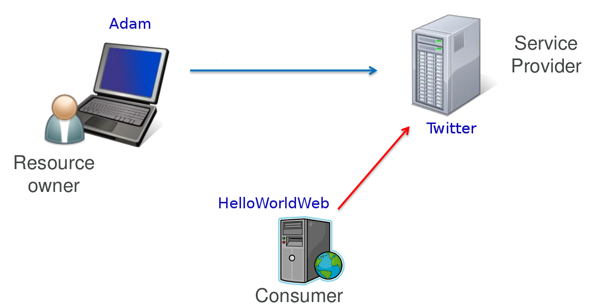

Table of Contents
Security information of a request is available by injecting a JAX-RS SecurityContext instance
using @Context
annotation. The injected security context instance provides the equivalent of the functionality available on
HttpServletRequest API.
The injected security context depends on the actual Jersey application deployment. For example, for a
Jersey application deployed in a Servlet container, the Jersey SecurityContext will
encapsulate information from a security context retrieved from the Servlet request.
In case of a Jersey application deployed on a Grizzly server,
the SecurityContext will return information retrieved from the Grizzly request.
SecurityContext can be used in conjunction with sub-resource locators to return different
resources based on the specific roles a user principal is included in. For example, a sub-resource locator could
return a different resource if a user is a preferred customer:
Example 17.1. Using SecurityContext for a Resource Selection
@Path("basket")
public ShoppingBasketResource get(@Context SecurityContext sc) {
if (sc.isUserInRole("PreferredCustomer") {
return new PreferredCustomerShoppingBasketResource();
} else {
return new ShoppingBasketResource();
}
}
SecurityContext is inherently request-scoped, yet can be also injected into fields of singleton
resources and JAX-RS providers. In such case the proxy of the request-scoped SecurityContext
will be injected.
Example 17.2. Injecting SecurityContext into a singleton resource
@Path("resource")
@Singleton
public static class MyResource {
// Jersey will inject proxy of Security Context
@Context
SecurityContext securityContext;
@GET
public String getUserPrincipal() {
return securityContext.getUserPrincipal().getName();
}
}
As described above, the SecurityContext by default (if not overwritten by
a request filter) only exposes security information from the underlying container.
In the case you deploy a Jersey application in a Servlet container, you need to configure the
Servlet container security aspects (<security-constraint>,
<auth-constraint> and user to roles mappings)
in order to be able to secure requests via calls to to the JAX-RS SecurityContext.
The SecurityContext can be directly retrieved from ContainerRequestContext via
getSecurityContext() method. You can also replace the default
SecurityContext in a request context with a custom one using the
setSecurityContext(SecurityContext) method. If you set a custom
SecurityContext instance in your ContainerRequestFilter,
this security context instance will be used for injection into JAX-RS resource class fields.
This way you can implement a custom authentication filter that may setup your own
SecurityContext to be used. To ensure the early execution of your custom
authentication request filter, set the filter priority to AUTHENTICATION
using constants from Priorities. An early execution of you authentication filter will ensure that
all other filters, resources, resource methods and sub-resource locators will execute with your custom
SecurityContext instance.
In cases where a Jersey application is deployed in a Servlet container you can rely only on
the standard Java/Jakarta EE Web application security mechanisms offered by the Servlet container and
configurable via application's web.xml descriptor.
You need to define the <security-constraint> elements in the
web.xml and assign roles which are able to access these resources. You can also
define HTTP methods that are allowed to be executed. See the following example.
Example 17.3. Securing resources using web.xml
<security-constraint>
<web-resource-collection>
<url-pattern>/rest/admin/*</url-pattern>
</web-resource-collection>
<auth-constraint>
<role-name>admin</role-name>
</auth-constraint>
</security-constraint>
<security-constraint>
<web-resource-collection>
<url-pattern>/rest/orders/*</url-pattern>
</web-resource-collection>
<auth-constraint>
<role-name>customer</role-name>
</auth-constraint>
</security-constraint>
<login-config>
<auth-method>BASIC</auth-method>
<realm-name>my-default-realm</realm-name>
</login-config>
The example secures two kinds of URI namespaces using the HTTP Basic Authentication.
rest/admin/* will be accessible only for user group "admin" and
rest/orders/* will be accessible for "customer" user group. This security configuration
does not use JAX-RS or Jersey features at all as it is enforced by the Servlet container even before
a request reaches the Jersey application. Keeping these security constrains up to date with your
JAX-RS application might not be easy as whenever you change the @Path annotations on your resource
classes you may need to update also the web.xml
security configurations to reflect the changed JAX-RS resource paths. Therefore Jersey offers a
more flexible solution
based on placing standard Java/Jakarta EE security annotations directly on JAX-RS resource classes and methods.
With Jersey you can define the access to resources based on the user group using annotations. You can, for example, define that only a user group "admin" can execute specific resource method. To do that you firstly need to register RolesAllowedDynamicFeature as a provider. The following example shows how to register the feature if your deployment is based on a ResourceConfig.
Example 17.4. Registering RolesAllowedDynamicFeature using ResourceConfig
final ResourceConfig resourceConfig = new ResourceConfig(MyResource.class);
resourceConfig.register(RolesAllowedDynamicFeature.class);
Alternatively, typically when deploying your application to a Servlet container, you can implement your JAX-RS
Application subclass by extending from the Jersey ResourceConfig and
registering the RolesAllowedDynamicFeature in the constructor:
Example 17.5. Registering RolesAllowedDynamicFeature by extending ResourceConfig
public class MyApplication extends ResourceConfig {
public MyApplication() {
super(MyResource.class);
register(RolesAllowedDynamicFeature.class);
}
}
Once the feature is registered, you can use annotations from package
jakarta.annotation.security defined by JSR-250. See the following example.
Example 17.6. Applying jakarta.annotation.security to JAX-RS resource methods.
@Path("/")
@PermitAll
public class Resource {
@RolesAllowed("user")
@GET
public String get() { return "GET"; }
@RolesAllowed("admin")
@POST
public String post(String content) { return content; }
@Path("sub")
public SubResource getSubResource() {
return new SubResource();
}
}
The resource class Resource defined in the example is annotated with a
@PermitAll annotation. This means that all methods in the class which do not
override this
annotation will be permitted for all user groups (no restrictions are defined). In our example, the
annotation will only apply to the getSubResource() method as it is the only method
that does not override the annotation by defining custom role-based security settings using the
@RolesAllowed annotation.
@RolesAllowed annotations present on the other methods define a role or a set of
roles that are allowed to execute a particular method.
These Java/Jakarta EE security annotations are processed internally in the request filter registered using
the Jersey RolesAllowedDynamicFeature. The roles defined in the annotations are
tested against current roles set in the SecurityContext using
the SecurityContext.isUserInRole(String role) method. In case the caller
is not in the role specified by the annotation, the HTTP 403 (Forbidden)
error response is returned.
For details about client security please see the Client chapter. Jersey
client allows to define parameters of SSL communication using HTTPS protocol.
You can also use jersey built-in authentication filters which perform HTTP Basic Authentication
or HTTP Digest Authentication. See the client chapter for more details.
OAuth is a specification that defines secure authentication model on behalf of another user. Two versions of OAuth exists at the moment - OAuth 1 defined by OAuth 1.0 specification and OAuth 2 defined by OAuth 2.0 specification. OAuth 2 is the latest version and it is not backward compatible with OAuth 1 specification. OAuth in general is widely used in popular social Web sites in order to grant access to a user account and associated resources for a third party consumer (application). The consumer then usually uses RESTful Web Services to access the user data. The following example describes a use case of the OAuth (similar for OAuth 1 and OAuth 2). The example is simple and probably obvious for many developers but introduces terms that are used in this documentation as well as in Jersey OAuth API documentation.
Three parties act in an OAuth scenario.
|  |
The first party represents a user, in our case Adam,
who is called in the OAuth terminology a Resource Owner. Adam has an account on
Twitter. Twitter represents the second party. This party is called a
Service Provider. Twitter offers a web interface
that Adam uses to create new tweets, read tweets of others etc. Now, Adam uses our new web site,
HelloWorldWeb, which is a very simple web site that says Hello World but it additionally
displays the last tweet of the logged in user.
To do so, our web site needs to have access to the Twitter account of Adam. Our web site is a 3rd party
application that wants to connect to Twitter and get Adam's tweets. In OAuth, such party is called
Consumer.
Our Consumer would like to use Twitter's RESTful APIs to get some data associated with Adam's Twitter account.
In order to solve this situation Adam could directly give his Twitter password to the HelloWorldWeb.
This would however be rather unsafe, especially if we do not know much about the authors of the application.
If Adam would give his password to HelloWorldWeb, he would have to deal with the associated security risks.
First of all, Adam would have to fully trust HelloWorldWeb
that it will not misuse the full access to his Twitter account. Next, if Adam would change his password,
he would need to remember to give the new password also to the HelloWorldWeb application.
And at last, if Adam would like to revoke the HelloWorldWeb's access to his Twitter account,
he would need to change his password again. The OAuth protocol has been devised to address all these challenges.
With OAuth, a resource owner (Adam) grants an access to a consumer (HelloWorldWeb) without giving it his password. This access grant is achieved by a procedure called authorization flow. Authorization flow is out of the scope of this documentation and its description can be found in the OAuth specification linked above. The result of the authorization flow is an Access Token which is later used by the consumer to authenticate against the service provider. While this brief description applies to both OAuth 1 and 2, note that there are some differences in details between these two specifications.
Jersey OAuth is currently supported for the following use cases and OAuth versions:
OAuth 1: Client (consumer) and server (service provider)
OAuth 2: Client (consumer)
With client and server support there are two supported scenarios:
Authorization flow
Authentication with Access Token (support for authenticated requests)
OAuth 1 protocol is based on message signatures that are calculated using specific
signature methods. Signatures are quite complex and therefore are implemented in a separate
module. The OAuth 1 Jersey modules are (groupId:artifactId:description):
org.glassfish.jersey.security:oauth1-client: provides client OAuth 1 support for authorization flow and authenticationorg.glassfish.jersey.security:oauth1-server: provides server OAuth 1 support for authorization flow, SPI for token management including authentication filter.org.glassfish.jersey.security:oauth1-signature: provides support for OAuth1 request signatures. This module is a dependency of previous two modules and as such it will be implicitly included in your maven project. The module can be used as a standalone module but this will not be needed in most of the use cases. You would do that if you wanted to implement your own OAuth support and would not want to deal with implementing the complex signature algorithms.
To add support for OAuth into your server-side application, add the following dependency to your
pom.xml:
<dependency>
<groupId>org.glassfish.jersey.security</groupId>
<artifactId>oauth1-server</artifactId>
<version>3.0.2</version>
</dependency>Again, there is no need to add a direct dependency to the signature module, it will be transitively included.
Let's now briefly go over the most important server Jersey OAuth APIs and SPIs:
OAuth1ServerFeature: The feature which enables the OAuth 1 support on the server and registers
OAuth1Providerexplained in the following point.OAuth1Provider: Implementation of this SPI must be registered to the server runtime as a standard provider. The implementation will be used to create request and access token, get consumer by consumer key, etc. You can either implement your provider or use the default implementation provided by Jersey by DefaultOAuth1Provider.
OAuth1ServerProperties: properties that can be used to configure the OAuth 1 support.
OAuth1Consumer, OAuth1Token: classes that contain consumer key, request and access tokens. You need to implement them only if you also implement the interface
OAuth1Provider.
First step in enabling Jersey OAuth 1 support is to register a
OAuth1ServerFeature instance
initialized with an instance of OAuth1Provider. Additionally, you may
configure the Request Token URI and Access Token URI -
the endpoints accessible on the OAuth server that issue Request and Access Tokens. These endpoints
are defined in the OAuth 1 specification and are contacted as part of the OAuth authorization flow.
Next, when a client initiates the OAuth authorization flow, the provided implementation of
OAuth1Provider will be invoked as to create new tokens,
get tokens and finally to store the issued Access Token. If a consumer already has a valid Access Token
and makes Authenticated Requests (with OAuth 1 Authorization information in the HTTP header),
the provider will be invoked to provide the OAuth1Token for the
Access Token information in the header.
Note
OAuth client support in Jersey is almost identical for OAuth 1 and OAuth 2. As such, this chapter provides useful information even for users that use OAuth 2 client support.
To add support for OAuth into your Jersey client application, add the following dependency to your
pom.xml:
<dependency>
<groupId>org.glassfish.jersey.security</groupId>
<artifactId>oauth1-client</artifactId>
<version>3.0.2</version>
</dependency>As mentioned earlier, there is no need to add a direct dependency to the signature module, it will be transitively included.
OAuth 1 client support initially started as a code migration from Jersey 1.x.
During the migration however the API of was significantly revised.
The high level difference compared to Jersey 1.x OAuth client API is that the authorization flow
is no longer part of a client OAuth filter. Authorization flow is now a standalone utility
and can be used without a support for subsequent authenticated requests.
The support for authenticated requests stays in the
ClientRequestFilter but is not part of a public API
anymore and is registered by a Jersey OAuth Feature.
The most important parts of the Jersey client OAuth API and SPI are explained here:
OAuth1ClientSupport: The main class which contains builder methods to build features that enable the OAuth 1 support. Start with this class every time you need to add any OAuth 1 support to the Jersey Client (build an Authorization flow or initialize client to perform authenticated requests). The class contains a static method that returns an instance of OAuth1Builder and also the class defines request properties to influence behaviour of the authenticated request support.
OAuth1AuthorizationFlow: API that allows to perform the Authorization flow against service provider. Implementation of this interface is a class that is used as a standalone utility and is not part of the JAX-RS client. In other words, this is not a feature that should be registered into the client.
AccessToken, ConsumerCredentials: Interfaces that define Access Token classes and Consumer Credentials. Interfaces contain getters for public keys and secret keys of token and credentials.
An example of how Jersey OAuth 1 client API is used was in the OAuth 1 Twitter Client Example but for now it's temporally removed from examples. The following code snippets are extracted from the example and explain how to use the Jersey OAuth client API.
Before we start with any interaction with Twitter, we need to register our application
on Twitter. See the example README.TXT file for the instructions.
As a result of the registration, we get the consumer credentials that identify our application.
Consumer credentials consist of consumer key and consumer secret.
As a first step in our code, we need to perform the authorization flow, where the user grants us an access to his/her Twitter client.
Example 17.7. Build the authorization flow utility
ConsumerCredentials consumerCredentials = new ConsumerCredentials(
"a846d84e68421b321a32d, "f13aed84190bc");
OAuth1AuthorizationFlow authFlow = OAuth1ClientSupport.builder(consumerCredentials)
.authorizationFlow(
"http://api.twitter.com/oauth/request_token",
"http://api.twitter.com/oauth/access_token",
"http://api.twitter.com/oauth/authorize")
.build();
Here we have built a OAuth1AuthorizationFlow utility component representing the
OAuth 1 authorization flow, using OAuth1ClientSupport and
OAuth1Builder API. The static builder method accepts
mandatory parameter with ConsumerCredentials. These
are credentials earlier issued by Twitter for our application.
We have specified the Twitter OAuth endpoints where Request Token, Access Token will be retrieved and
Authorization URI to which we will redirect the user in order to grant user's consent.
Twitter will present an HTML page on this URI and it will ask the user whether he/she would like us
to access his/her account.
Now we can proceed with the OAuth authorization flow.
Example 17.8. Perform the OAuth Authorization Flow
String authorizationUri = authFlow.start(); // here we must direct the user to authorization uri to approve // our application. The result will be verifier code (String). AccessToken accessToken = authFlow.finish(verifier);
In the first line, we start the authorization flow. The method internally makes a request to the
http://api.twitter.com/oauth/request_token URL
and retrieves a Request Token. Details of this request can be found in the OAuth 1 specification.
It then constructs a URI to which we must redirect the user. The URI is based on Twitter's
authorization URI (http://api.twitter.com/oauth/authorize) and contains
a Request Token as a query parameter. In the Twitter example, we have a simple console application therefore
we print the URL to the console and ask the user to open the URL in a browser to approve the authorization
of our application.
Then the user gets a verifier and enters it back to the console. However, if our application would be a
web application, we would need to return a redirection response to the user in order to redirect the user
automatically to the authorizationUri.
Once we have a verifier, we invoke the method finish()
on our OAuth1AuthorizationFlow instance, which internally
sends a request to an access token service URI (http://api.twitter.com/oauth/access_token)
and exchanges the supplied verifier for a new valid Access Token.
At this point the authorization flow is finished and we can start using the retrieved
AccessToken to make authenticated requests.
We can now create an instance of an OAuth 1 client Feature using
OAuth1ClientSupport and pass it our accessToken.
Another way is to use authFlow that already contains the information about access token
to create the feature instance for us:
Example 17.9. Authenticated requests
Feature feature = authFlow.getOAuth1Feature();
Client client = ClientBuilder.newBuilder()
.register(feature)
.build();
Once the feature is configured in the JAX-RS Client (or WebTarget),
all requests invoked from such Client (or WebTarget) instance
will automatically include an OAuth Authorization HTTP header (that contains also the OAuth signature).
Note that if you already have a valid Access Token (for example stored in the database for each of your users),
then you can skip the authorization flow steps and directly create the OAuth Feature
configured to use your Access Token.
Example 17.10. Build feature from Access Token
AccessToken storedToken = ...;
Feature filterFeature = OAuth1ClientSupport.builder(consumerCredentials)
.feature()
.accessToken(storedToken)
.build();
Here, the storedToken represents an AccessToken that your client
application keeps stored e.g. in a database.
Note that the OAuth feature builder API does not require the access token to be set.
The reason for it is that you might want to build a feature which would register the internal Jersey
OAuth ClientRequestFilter and other related providers but which would not
initialize the OAuth providers with a single fixed AccessToken instance.
In such case you would need to specify a token for every single request in the request properties.
Key names and API documentation of these properties can be found in
OAuth1ClientSupport.
Using this approach, you can have a single, OAuth enabled instance of a JAX-RS Client
(or WebTarget) and use it to make authenticated requests on behalf of multiple users.
Note that you can use the aforementioned request properties even if the feature has been initialized
with an AccessToken to override the default access token information for
particular requests, even though it is probably not a common use case.
The following code shows how to set an access token on a single request using the Jersey OAuth properties.
Example 17.11. Specifying Access Token on a Request.
Response resp =
client.target("http://my-serviceprovider.org/rest/foo/bar")
.request()
.property(OAuth1ClientSupport.OAUTH_PROPERTY_ACCESS_TOKEN, storedToken)
.get();
OAuth1AuthorizationFlow internally uses
a Client instance to communicate with the OAuth server. For this a
new client instance is automatically created by default. You can supply your instance of
a Client to be used for the authorization flow requests (for performance
and/or resource management reasons) using OAuth1Builder methods.
Follow the steps below in case the outgoing requests sent from client to server have to be signed with RSA-SHA1 signature method instead of the default one (HMAC-SHA1).
Example 17.12. Creating Public/Private RSA-SHA1 keys
$ # Create the private key. $ openssl genrsa -out private.key 2048 $ # Convert the key into PKCS8 format. $ openssl pkcs8 -topk8 -in private.key -nocrypt $ # Extract the public key. $ openssl rsa -in private.key -pubout
The output of the second command can be used as a consumer secret to sign the outgoing request:
new ConsumerCredentials("consumer-key", CONSUMER_PRIVATE_KEY). Public key obtained from
the third command can be then used on the service provider to verify the signed data.
For more advanced cases (i.e. other formats of keys) a custom OAuth1SignatureMethod
should be implemented and used.
At the moment Jersey supports OAuth 2 only on the client side.
Note
Note: It is suggested to read the section Section 17.3.1.2, “Client” before this section. Support for OAuth on the client is very similar for both OAuth 1 and OAuth 2 and general principles are valid for both OAuth versions as such.
Note
OAuth 2 support is in a Beta state and as such the API is subject to change.
To add support for Jersey OAuth 2 Client API into your application, add the following dependency
to your pom.xml:
<dependency>
<groupId>org.glassfish.jersey.security</groupId>
<artifactId>oauth2-client</artifactId>
<version>3.0.2</version>
</dependency>
OAuth 2, in contrast with OAuth 1, is not a strictly defined protocol, rather a framework.
OAuth 2 specification defines many extension points and it is up to service providers to
implement these details and document these implementations for the service consumers.
Additionally, OAuth 2 defines more than one authorization flow.
The authorization flow similar to the flow from OAuth 1 is called
the Authorization Code Grant Flow.
This is the flow currently supported by Jersey (Jersey currently does not support other flows).
Please refer to the OAuth 2.0 specification for more details about authorization flows.
Another significant change compared to OAuth 1 is that OAuth 2 is not based on signatures and
secret keys and therefore for most of the communication SSL needs to be used
(i.e. the requests must be made through HTTPS). This means that all OAuth 2 endpoint URIs must use
the https scheme.
Due to the fact that OAuth 2 does not define a strict protocol, it is not possible to provide a single, universal pre-configured tool interoperable with all providers. Jersey OAuth 2 APIs allows a lot of extensibility via parameters sent in each requests. Jersey currently provides two pre-configured authorization flow providers - for Google and Facebook.
The most important entry points of Jersey client OAuth 2 API and SPI are explained below:
OAuth2ClientSupport: The main class which contains builder methods to build features that enable the OAuth 2 support. Start with this class every time you need to add any OAuth 2 support to the Jersey Client (build an Authorization flow or initialize client to perform authenticated requests). The class contains also methods to get authorization flow utilities adjusted for Facebook or Google.
OAuth2CodeGrantFlow: API that allows to perform the authorization flow defined as Authorization Code Grant Flow in the OAuth 2 specification. Implementation of this interface is a class that is used as a standalone utility and is not part of the JAX-RS client. In other words, this is not a feature that should be registered into the client.
ClientIdentifier: Identifier of the client issued by the Service Provider for the client. Similar to ConsumerCredentials from OAuth 1 client support.
OAuth2Parameters: Defines parameters that are used in requests during the authorization flow. These parameters can be used to override some of the parameters used in different authorization phases.
TokenResult: Contains result of the authorization flow. One of the result values is the Access Token. It can additionally contain the expiration time of the Access Token and Refresh Token that can be used to get new Access Token.
The principle of performing the authorization flow with Jersey is similar to OAuth 1. Check the OAuth 1 Twitter Client Example which utilizes Jersey client support for OAuth 2 to get Google Tasks of the user. The application is a web application that uses redirection to forward the user to the authorization URI.
The following code is an example of how to build and use OAuth 2 authorization flow.
Example 17.13. Building OAuth 2 Authorization Flow.
OAuth2CodeGrantFlow.Builder builder =
OAuth2ClientSupport.authorizationCodeGrantFlowBuilder(clientId,
"https://example.com/oauth/authorization",
"https://example.com/oauth/token");
OAuth2CodeGrantFlow flow = builder
.property(OAuth2CodeGrantFlow.Phase.AUTHORIZATION, "readOnly", "true")
.scope("contact")
.build();
String authorizationUri = flow.start();
// Here we must redirect the user to the authorizationUri
// and let the user approve an access for our app.
...
// We must handle redirection back to our web resource
// and extract code and state from the request
final TokenResult result = flow.finish(code, state);
System.out.println("Access Token: " + result.get);
In the code above we create an OAuth2CodeGrantFlow from an
authorization URI and an access token URI. We have additionally set a
readOnly parameter to true and assigned the parameter
to the authorization phase. This is the way, how you can extend the standard flow with
additional service provider-specific parameters. In this case, the readOnly=true
parameter will be added as a query parameter to the authorization uri returned from the method
flow.start().
If we would specify ACCESS_TOKEN_REQUEST as a phase, then the parameter
would have been added to the request when flow.finish()
is invoked. See javadocs for more information. The parameter readOnly
is not part of the OAuth 2 specification and is used in the example
for demonstration of how to configure the flow for needs of specific service providers (in this
case, the readOnly
param would be described in the service provider's documentation).
Between the calls to flow.start() and flow.finish(), a user
must be redirected to the authorization URI. This means that the code will not be executed in
a single method and the finish part will be invoked as a handler of redirect request back to our web from
authorization URI.